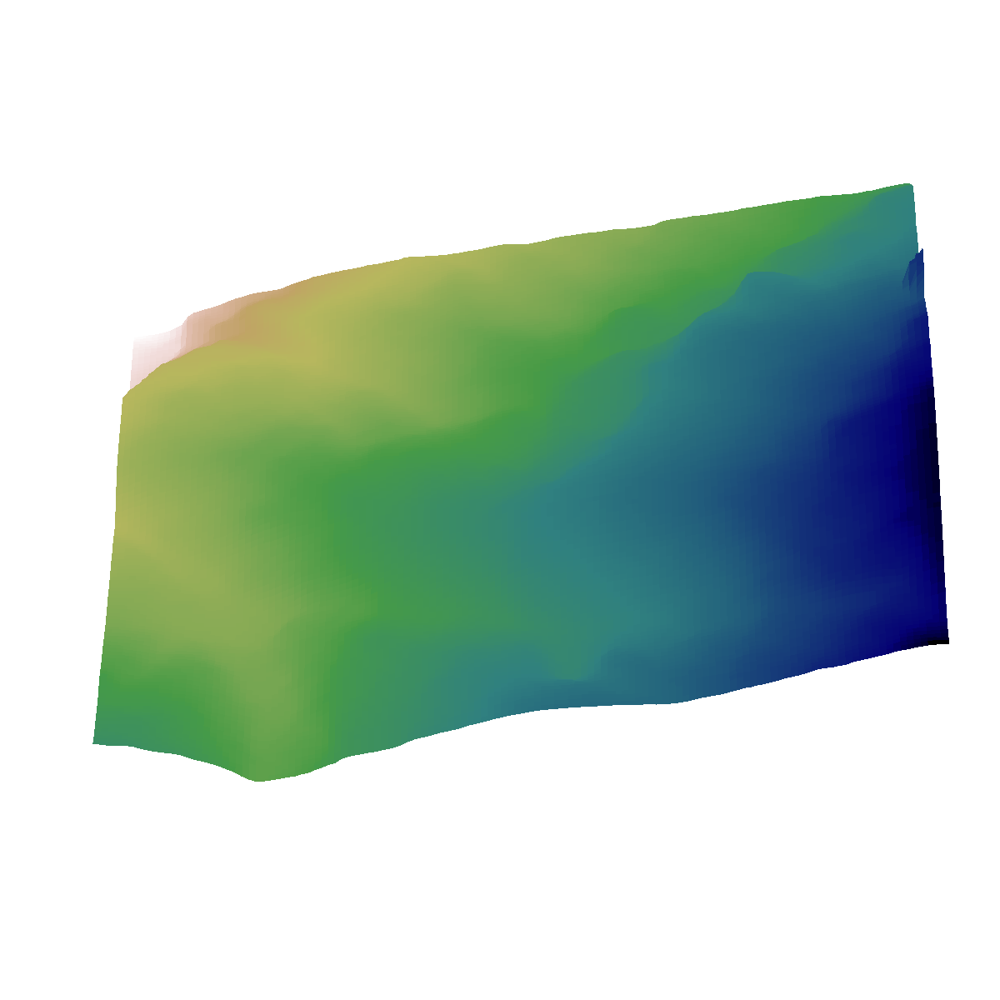
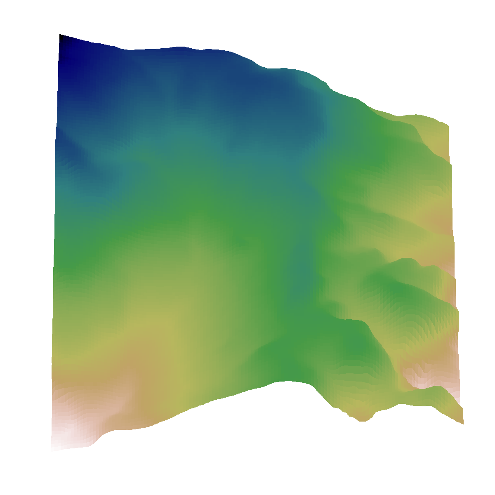

Adaptive Diffusion Terrain Generator
for Autonomous Uneven Terrain Navigation
Animation: Adaptive Diffusion Terrain Generator
Adaptive Difficulty
(TOP) by adjusting contributions of EASY and HARD samples to generate samples tailored to RL policy's current performance.
Adaptive Diversity
(BOTTOM 8) Low --- Forward Step K ↑ --- High (with 0.5 * Easy + 0.5 * Hard)

Easy Environment
Loading...

Hard Environment
If it shows LOADING, just drag the progress bar.
Abstract
Model-free reinforcement learning has emerged as a powerful method for developing robust robot control policies capable of navigating through complex and unstructured terrains.
The effectiveness of these methods hinges on two pivotal elements:
(1) the use of massively parallel physics simulations to expedite policy training,
and
(2) the deployment of an environment generator tasked with crafting terrains that are sufficiently challenging yet attainable, thereby facilitating continuous policy improvement.
Existing methods to environment generation often rely on heuristics constrained by a set of parameters, limiting the diversity and realism.
In this work, we introduce the Adaptive Diffusion Terrain Generator (ADTG), a novel method that leverages Denoising Diffusion Probabilistic Models (DDPMs) to dynamically expand an existing training environment by adding more diverse and complex terrains tailored to the current policy.
Unlike conventional methods, ADTG adapts the terrain complexity and variety based on the evolving capabilities of the current policy.
This is achieved through two primary mechanisms:
First, by blending terrains from the initial dataset within their latent spaces using performance-informed weights, ADTG creates terrains that suitably challenge the policy.
Secondly, by manipulating the initial noise in the diffusion process, ADTG seamlessly shifts between creating similar terrains for fine-tuning the current policy or entirely novel ones for expanding training diversity.
Our experiments show that the policy trained by ADTG outperforms procedural generated and natural environments, along with competing navigation methods.
Reinforcement Learning Process
Zero-Shot Sim-to-Real Generalization Experiments
ARID
MUD
GRAVEL
DUNE
Quadruped Embodiment Locomotion Experiments
Videos are speed-up to 15 seconds so the robot speeds do not align.
BibTeX
@inproceedings{
yu2024adaptive,
title={Adaptive Diffusion Terrain Generator for Autonomous Uneven Terrain Navigation},
author={Youwei Yu and Junhong Xu and Lantao Liu},
booktitle={8th Annual Conference on Robot Learning},
year={2024},
url={https://openreview.net/forum?id=xYleTh2QhS}
}